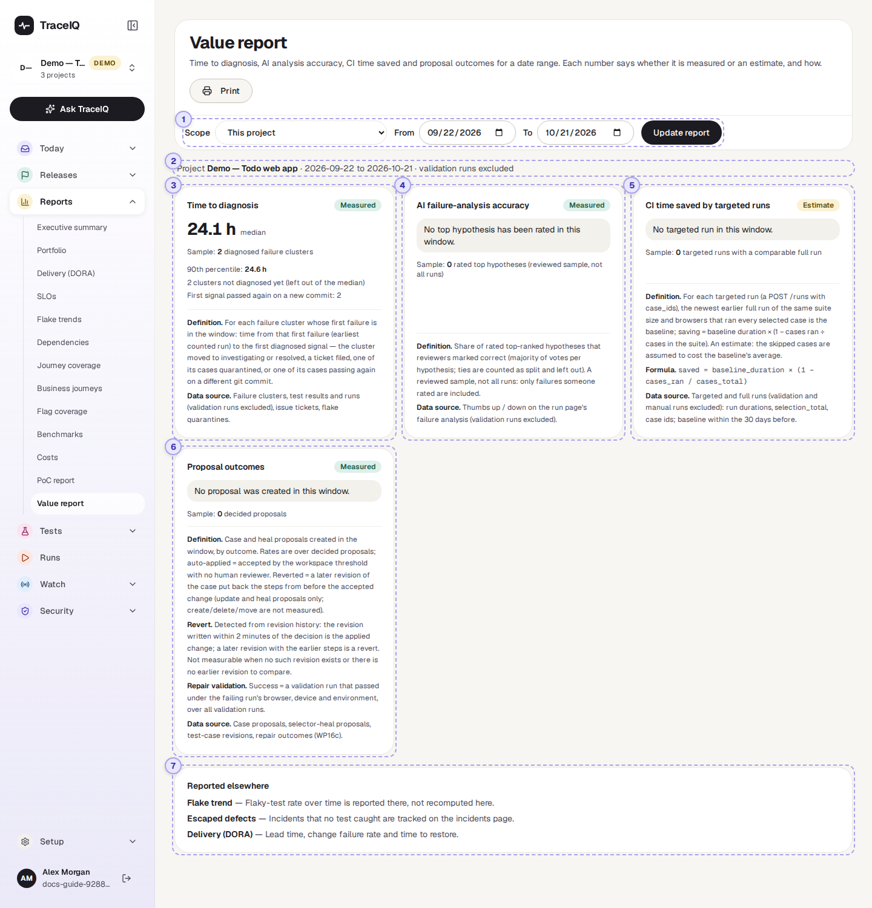
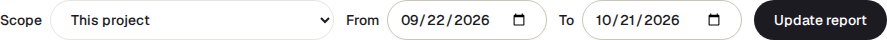
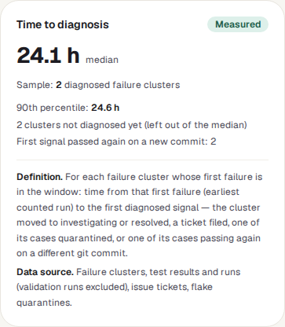

Value report
Four numbers that show what TraceIQ did for you over a period: how quickly new failures got looked at, how often its AI explanation of a failure was right, how much test time targeted runs saved, and what happened to the fixes it suggested. Each number says whether it is measured or an estimate, and how it was worked out.
What it is for
The Value report answers "Is TraceIQ actually helping, and how do we know?" It is meant for the end of a pilot or a quarterly review, where numbers have to be defensible. That is why every card shows its sample size, its definition and its data source, and why a number with too little data behind it is left out rather than shown as zero.
Pilot sponsors
Get honest numbers to decide whether to continue, with what each one is based on.
Leads
See whether failures are picked up quickly, and whether the team trusts the suggested fixes.
Testers
Check that your work (triaging, rating AI explanations) is being counted.
Where to find it: in the sidebar, open Reports → Value report. It starts on the project selected at the top of the sidebar.
A tour of the screen
The numbers on the screenshot match the sections below.

Scope and dates

- Scope: This project (the one selected in the sidebar) or Workspace (projects you can read), which adds up every project of a workspace you have access to. With more than one workspace, a Workspace picker appears; it starts on your first one.
- From / To: the period, both days included, the last 30 days to begin with, at most 366 days. New dates apply when you press Update report; the scope and workspace apply at once.
- Print, above the controls, opens your browser's print window (choose "Save as PDF" for a file).
What is covered
One line naming the project (or the workspace and how many projects), the dates, and a reminder that validation runs are excluded: the check runs TraceIQ makes only to try a suggested fix (see Proposals) never count in any number here.
How every card is built

- The label top right: Measured means counted from what happened; Estimate means worked out from assumptions.
- The big number, with what it is ("median", for instance). If there isn't enough data, a grey box says why instead, such as "No targeted run in this window". It never shows 0 for "no data".
- Sample: how many things the number is based on. A number from 2 items is a hint, not a result.
- Details, then Definition and Data source: the exact rule, always shown so the reader can check it.
Time to diagnosis
How long a new problem waited before someone did something about it. It looks at each failure group (a set of failures with the same cause, as on Failure triage) whose first failure falls in the period, and measures the time from that first failure to the first sign that it was dealt with:
- someone set the group to Investigating or Resolved on Failure triage;
- a ticket was filed for it;
- one of its tests was quarantined (set aside as unreliable);
- one of its tests passed again on a different version of the code (git commit).
The big number is the median (half were faster, half slower); the 90th percentile underneath is the time 9 in 10 were dealt with by. Groups nobody has dealt with yet are counted separately ("not diagnosed yet") and left out of both. The lines "First signal …" say which sign came first, and how often.
AI failure-analysis accuracy
How often the AI's best explanation of a failure was right. On a run's page, each failure has an AI analysis with ranked explanations ("hypotheses"), and editors can mark each one 👍 Correct or 👎 Incorrect. This card takes the top explanation of each rated failure and counts the share the reviewers marked correct (by majority; ties are "split" and left out). It also shows the votes, and the split between explanations from the AI model and from TraceIQ's built-in rules.
It is a reviewed sample: only failures someone rated are included. With fewer than 5 rated explanations the share is not shown at all.
CI time saved by targeted runs
An estimate. A targeted run carries out only the tests affected by a change, instead of the whole suite (it is started from a build pipeline, CI — for example by TraceIQ's GitHub Action — or by an AI agent). For each one, TraceIQ looks for the newest earlier full run of the same suite in the 30 days before it, and estimates:
saved = full run's test time × (1 − tests run ÷ tests in the suite)
The big number is browser time saved; underneath are the wall-clock time saved (also an estimate) and the counts it rests on, including targeted runs that had no full run to compare with. Manual runs are left out.
Proposal outcomes
What happened to the fixes TraceIQ (or an AI agent) suggested in the period: new or changed tests (case proposals) and new ways to find a page element that moved (heal proposals). The big number is the share of decided proposals that were applied. Underneath, for each kind: how many were created, the share accepted, auto-applied (accepted by the workspace's rule, with no person deciding) and rejected, and how many are still waiting. Two more lines:
- Reverted later: of the accepted changes, how many were later undone by someone putting back the earlier steps. Only changes to existing tests can be checked; others are "not measurable".
- Repair validation: how often a trial run of a suggested fix passed under the same conditions as the failure, and how many accepted fixes were tried that way first.
Reported elsewhere
Links to related numbers that live on their own pages and are not repeated here: Flake trend (unreliable tests over time), Escaped defects (incidents no test caught, on Incidents) and Delivery (DORA) (how fast and safely changes reach production).
Watch it in use
How to…
…prepare the numbers for a pilot review
- Set Scope to Workspace and pick the pilot's workspace.
- Set From and To to the pilot's first and last day, and press Update report.
- For every number you quote, also quote its Sample, and say whether it is measured or an estimate.
- Press Print to save the page as a PDF.
…make the AI accuracy number appear
- Open a failed run on the Runs page and look at the AI analysis of a failing test.
- Press 👍 Correct or 👎 Incorrect under the top explanation (editors only).
- Once at least 5 failures in the period are rated, the card shows a percentage.
…bring the time to diagnosis down
- Look at new problems on Failure triage every day.
- Set each one to Investigating as soon as someone picks it up: that moment is what this card measures.
Good to know
- Nothing here can be changed. The page only reads. The ratings and triage it counts are made on the run pages and on Failure triage.
- You see only what you can access. The workspace scope adds up only the projects you can read.
- Days are UTC days. The period runs from midnight UTC on the first day to the end of the last day.
- Ratings are made by people. Only editors can rate an AI explanation, and an API key (used by scripts and agents) can't, so an agent can't rate its own work. If the analysis is regenerated after you open the page, your vote is refused rather than counted against a different explanation.
- Small samples. The demo's 24.1 hours comes from 2 problems. Read any number with a small sample as a direction, not a result.
- Not in shared links. Unlike the PoC report and the executive summary, the Value report can't be shared as a public link; print it instead.
Related pages
Failure triage
Where problems are set to Investigating or Resolved, which Time to diagnosis measures.
Proposals
The suggested fixes counted in Proposal outcomes, and where they are accepted or rejected.
PoC report
The previous page: a one-page trial summary with a labelled time-saved estimate.
Flake trends
Unreliable tests over time, linked from Reported elsewhere.